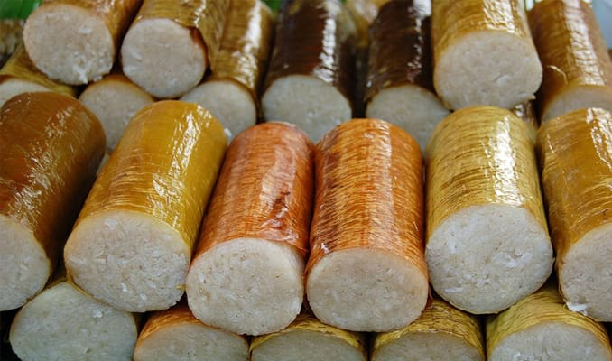

Makanan Khas Medan
1. Lemang

Lemang merupakan makanan khas Medan yang menggunakan
bahan utama pangan berupa beras ketan.
Lemang dimasak atau dimatangkan di dalam seruas bambu yang sebelumnya
digulung dengan selembar daun pisang.
Beras ketan yang dijadikan lemang dicampur bersama santan kelapa untuk
kemudian dibungkus menggunakan daun pisang hingga berbentuk gulungan dan
dimasukkan ke dalam seruas bambu.
Lemang kemudian dibakar hingga matang di atas tungku panjang.
Saat sudah matang, lemang bisa langsung dimakan dalam keadaan hangat.
2.Mie Gomak
 Mie Gomak sebutan nama lain dari spaghetti ala orang medan.
Makanan ini berasal dari wilayah yang cukup terkenal yaitu balige
danau toba.
Untuk rasanya terbilang cukup istimewa karena memiliki bumbu-bumbu
yang sedap. Mie gomak ini dapat kamu temukan di sekitar pasar balige,
kabupaten toba samosir, sumatra utara. Harga 1 porsinya sendiri cukup
murah yaitu hanya 5000
Mie Gomak sebutan nama lain dari spaghetti ala orang medan.
Makanan ini berasal dari wilayah yang cukup terkenal yaitu balige
danau toba.
Untuk rasanya terbilang cukup istimewa karena memiliki bumbu-bumbu
yang sedap. Mie gomak ini dapat kamu temukan di sekitar pasar balige,
kabupaten toba samosir, sumatra utara. Harga 1 porsinya sendiri cukup
murah yaitu hanya 5000
3.Kolak Durian
 Medan menjadi salah satu kota penghasil buah durian yang legit, manis,
dan wanginya khas. Siapapun yang datang ke Medan harus menjajal beragam
kuliner yang dibuat dari bahan dasar durian, salah satunya adalah kolak
durian.
Kolak durian adalah makanan khas Medan yang disajikan bersama ketan putih
kukus, pisang kepok, dan jagung manis rebus.
Untuk kuah kolaknya dibuat dari campuran santan kelapa dan gula arean.
Cita rasa dari kolak durian manis yang berpadu dengan aroma wangi dari
buahnya.
Medan menjadi salah satu kota penghasil buah durian yang legit, manis,
dan wanginya khas. Siapapun yang datang ke Medan harus menjajal beragam
kuliner yang dibuat dari bahan dasar durian, salah satunya adalah kolak
durian.
Kolak durian adalah makanan khas Medan yang disajikan bersama ketan putih
kukus, pisang kepok, dan jagung manis rebus.
Untuk kuah kolaknya dibuat dari campuran santan kelapa dan gula arean.
Cita rasa dari kolak durian manis yang berpadu dengan aroma wangi dari
buahnya.
Kolak durian bisa dihidangkan dalam keadaan hangat atau jika ingin
dingin bersama es juga bisa dan bahkan lebih menyegarkan.